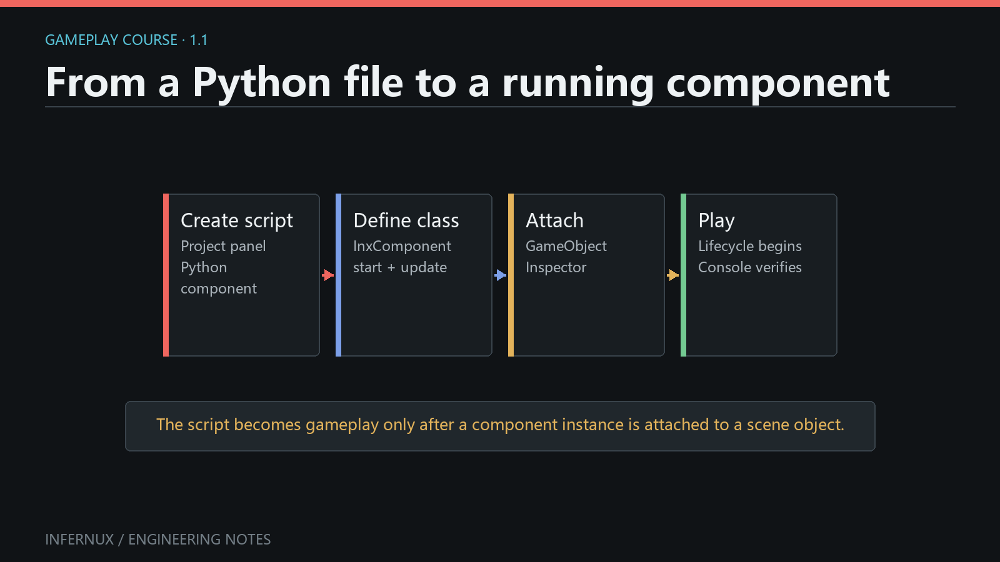

Plugins · Chapter 1
Build your first plugin
This chapter turns a component and a text file into a reusable .inxpkg. You
need Infernux 0.4.0 to test it. Packaging the repository itself only needs Python:
the official packer uses the standard library, without importing the engine.

Choose a layout
Start from the official plugin template.
Keep its standalone package.py and release workflow. Replace the example
payload with the following files; do not keep sample code you are not shipping.
hello-plugin/
README.md # GitHub documentation only
package.py # standalone packer from the template
.github/workflows/ # release automation
package/ # only this directory enters .inxpkg
inx_package.json
runtime/
hello_resource.py
data/message.txt
plugin_pages/
guide.md
guide.zh-CN.md
Use lowercase, snake_case Python filenames. Set package/inx_package.json to:
{
"reference": "my_studio/hello_plugin",
"name": "Hello Plugin",
"version": "0.1.0",
"engine": ">=0.4,<0.5",
"intro": "A component that reads its packaged text resource."
}
Choose your own unique reference before publishing. Do not change it between
updates. The manifest does not need requirements or dependencies keys.
This example has no third-party dependencies.
Prefer local authoring? Create Packages/hello_plugin/ inside a project and put
the contents of package/ directly there. There is no second wrapper. A
manifest is optional: exporting this folder as hello_plugin.inxpkg generates
the default name and reference hello_plugin. With an explicit manifest, its
identity wins. A manifest under Assets/ is not discovered as a plugin.
Write the component and resource
Put Hello from my plugin! in runtime/data/message.txt. Then create
runtime/hello_resource.py:
from pathlib import Path
import infernux as inx
class HelloResource(inx.InxComponent):
def start(self) -> None:
path = inx.Application.package_path(
"my_studio/hello_plugin", "runtime/data/message.txt"
)
message = Path(path).read_text(encoding="utf-8").strip()
inx.Debug.log(message, self)
The reference in this example matches the installed package. While authoring
directly in Packages/hello_plugin/, use hello_plugin as the lookup reference:
local Player identity follows the actual project directory, not a future
distribution reference. To use the example unchanged locally, create
Packages/my_studio/hello_plugin/ and include the explicit manifest above.
package_path returns a readable filesystem path in the Editor and Player. Raw
runtime directories keep their relative layout, so JSON can refer to a sibling
TXT and external libraries can find adjacent resources. Do not build paths from
the current working directory or a preload script's __file__. The general
Application.asset_path("Assets/Data/message.txt") API also resolves authored
asset paths through the Player's cooked GUID catalog.
This is not permission to execute every file everywhere: a Windows DLL cannot
run on Linux, and a browser cannot launch a native EXE or Java process. Supply
target-compatible libraries and state supported platforms in your documentation.
Use Application.persistent_data_path() for writes, not packaged content.
For package-local Python imports, use explicit relative imports and normal
__init__.py files where needed. For startup hooks, subclass InxPreload; inside
preload(context), context.package_path("runtime/data/message.txt") resolves
the same content without hard-coding the reference. See the
plugin API guide for lifecycle details.
Separate runtime, editor and documentation
| Payload | Installed location | Included in a Player? |
|---|---|---|
runtime/ |
Packages/<reference>/runtime/ |
Yes |
editor/ |
Packages/<reference>/editor/ |
No |
plugin_pages/ |
Packages/<reference>/plugin_pages/ |
No |
Ordinary assets, such as materials/ |
Assets/Plugins/materials/ |
Through the asset pipeline |
Keep files needed verbatim by a runtime, such as JARs, DLLs, Wasm or nested data
directories, under runtime/. Put Editor-only helpers under editor/. A plugin
is not restricted to Python: your build can use Java, C++, Rust or another tool.
Build configuration and intermediate output stay outside package/; the build
places only distributable payloads inside it.
Write a short installation and usage guide in plugin_pages/guide.md, and its
Chinese translation in guide.zh-CN.md. Images use relative paths and must be
inside the package. The repository's README is for GitHub; it is not a plugin
panel page. Keep existing .meta files when editing, renaming or releasing
assets: they preserve identity across imports and updates. Packages/ scripts
and assets participate in normal refresh, including newly authored components.
Package and verify in a fresh project
With the current official template, run these commands at the repository root:
python package.py build dist/hello_plugin.inxpkg
python package.py verify dist/hello_plugin.inxpkg
This produces the native InxPack container, not a renamed ZIP. Only package/
is packed; the outer README, CMake/Gradle files and dist/ are excluded.
- Open a separate test project in the Editor and open Plugins.
- Choose Add plugin, select the
.inxpkg, review its contents and import it. - Confirm Hello Plugin shows its introduction page in the selected language.
- Add
HelloResourceto an active GameObject, save the scene and enter Play. - The Console must show
Hello from my plugin!without an import or path error. - Export a game through an installed platform plugin. Run it and confirm the
same message is read. Check the packaged
Content.inxpkg, not a loose projectAssets/tree. This is binary content packaging, not irreversible encryption.
For local authoring, select the package root folder in the Project/File Manager and use Export InxPackage. Export the folder itself, not only its runtime script, so the resource and optional metadata remain part of the package.
Publish and update
Keep the template's release workflow, set the manifest version, commit the
payload and .meta files, then push the matching tag (for example v0.1.0).
The workflow publishes an .inxpkg and release metadata. Check its success and
download the release into a fresh project before announcing it. Users can add
the repository URL through the plugin panel; publishing a repository does not
automatically add it to the engine's official catalog.
For an update, retain the reference and existing GUIDs, increment the version, and publish another matching release. Users explicitly choose a compatible release on Versions. Refresh catalog updates discovery only, not installed versions. Test updating an existing project as well as a fresh installation; local edits must not be silently overwritten.
For larger examples, browse the MCP, Windows, Linux, Android and Web repositories. Platform plugins ship precompiled Players; installing one does not ask game authors to run CMake. Android additionally requires Android support installed through Hub.